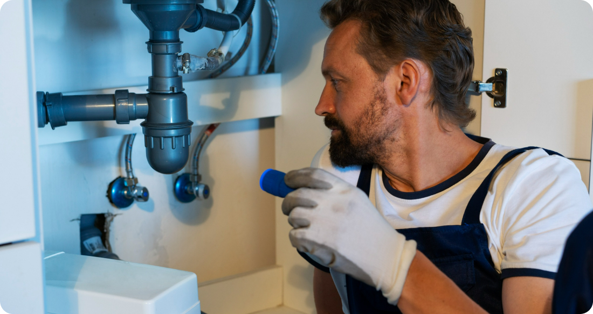
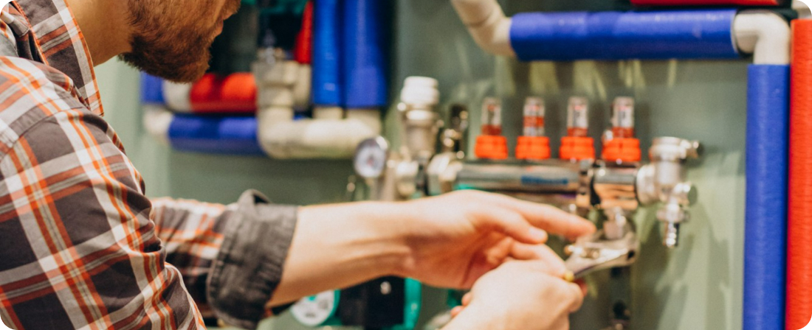

Exploring Innovative Plumbing Technologies: What's Next for the Industry
The plumbing industry is constantly evolving, driven by advancements in technology, changing consumer needs, and a growing emphasis on sustainability and efficiency. From smart fixtures to water-saving devices, innovative plumbing technologies are revolutionizing the way we manage water resources, improve system performance, and enhance user experience. In this article, we'll explore some of the latest innovations in plumbing technology and discuss what the future holds for the industry.
1. Smart Plumbing Fixtures
Smart plumbing fixtures, equipped with sensors, connectivity, and automation capabilities, are transforming traditional plumbing systems into intelligent, data-driven networks. Smart toilets, faucets, and showers can monitor water usage, adjust settings for optimal efficiency, and provide real-time feedback to users and homeowners. These fixtures can help conserve water, reduce energy consumption, and enhance user comfort and convenience.
2. Leak Detection and Prevention Systems
Leak detection and prevention systems use advanced sensors and algorithms to identify and mitigate leaks in plumbing systems before they escalate into costly water damage incidents. These systems can monitor water flow, pressure, and temperature in real-time, alerting homeowners or building managers to potential leaks or abnormalities via smartphone apps or notifications. By proactively addressing leaks, these technologies help conserve water, minimize property damage, and reduce repair costs.
3. Water Purification and Filtration Systems
With growing concerns about water quality and contamination, water purification and filtration systems are becoming increasingly popular in both residential and commercial settings. These systems use advanced filtration technologies such as reverse osmosis, ultraviolet disinfection, and activated carbon to remove impurities, chemicals, and contaminants from drinking water. By providing clean, safe drinking water on-demand, these systems contribute to improved health and well-being for consumers.
4. Greywater Recycling Systems
Greywater recycling systems capture, treat, and reuse wastewater from sources such as sinks, showers, and washing machines for non-potable purposes such as irrigation, toilet flushing, and laundry. These systems help conserve water, reduce demand on municipal water supplies, and minimize the environmental impact of wastewater discharge. With advancements in filtration and treatment technologies, greywater recycling systems are becoming more accessible and cost-effective for residential and commercial applications.
5. Pipe Inspection and Maintenance Technologies
Innovative pipe inspection and maintenance technologies, such as robotic cameras, sonar imaging, and trenchless repair methods, are revolutionizing the way plumbers diagnose and address plumbing issues. These technologies enable non-invasive inspection of pipes, identification of defects or blockages, and targeted repairs or replacements with minimal disruption to property owners. By streamlining maintenance operations and reducing downtime, these technologies improve efficiency and customer satisfaction.
As technology continues to advance, the plumbing industry is poised for significant transformation and innovation. From smart fixtures and leak detection systems to water purification and greywater recycling, innovative plumbing technologies are revolutionizing how we manage and conserve water resources, improve system performance, and enhance user experience. By embracing these technologies and investing in sustainable, efficient solutions, we can build a more resilient and environmentally responsible plumbing infrastructure for the future.